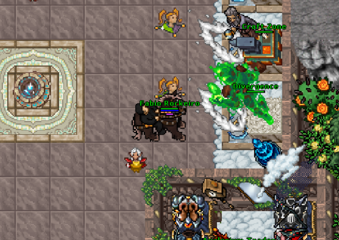
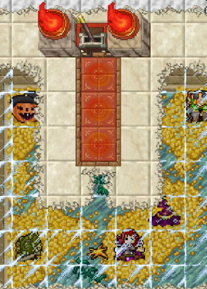
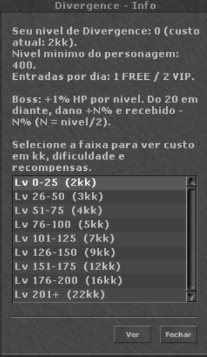
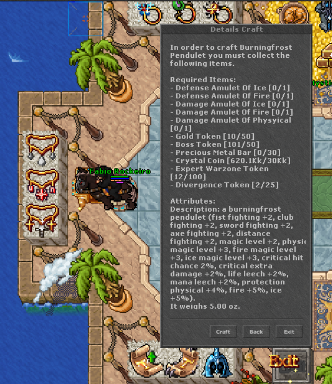
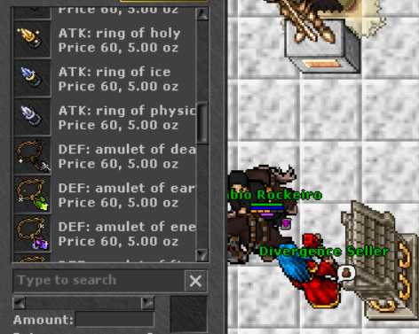

Seu próximo desafio começa na Safezone
Vá ao norte da SAFEZONE, onde ficam os portais. O acesso à Divergence está do lado direito, próximo à Craft Zone.
- Prepare o personagem
Tenha pelo menos level 400 e Hazard 3. Entre sozinho ou com até mais 2 jogadores.
- Confira sua faixa
A entrada / troca de faixa custa de 2kk a 22kk, conforme o nível da Divergence.
- Reúna o grupo na alavanca
Prepare os equipamentos e os elementos antes de começar a sequência de bosses.
Entradas por dia: 1 para Free Account e 2 para VIP.
{kind=link}

Ampliar imagem ↗{kind=link}

LÁ ELE Ampliar imagem ↗Até três jogadores.
Todos os elementos.
Cada nível exige derrotar todos os seis bosses, um por um, em salas diferentes. Só depois de completar a sequência você avança 1 nível de Divergence.
Seu personagem precisa estar preparado para bater em todos os elementos. Em grupo, combinem a cobertura elemental antes de puxar a alavanca.
Seis encontros a cada nível
Prepare-se para enfrentar todos eles em salas separadas.
 HolyAurethion, the Divine Arbiter
HolyAurethion, the Divine Arbiter DeathMortyssar, the Grave Sovereign
DeathMortyssar, the Grave Sovereign FireIgnivar, the Cinder Tyrant
FireIgnivar, the Cinder Tyrant EnergyVoltaris, the Arcane Conduit
EnergyVoltaris, the Arcane Conduit IceCryoneth, the Frozen Doom
IceCryoneth, the Frozen Doom EarthTerragor, the Worldbreaker
EarthTerragor, the WorldbreakerDerrotar apenas um boss não aumenta seu nível: complete os seis encontros para avançar.
Quanto maior o desafio, maior a recompensa
Selecione uma faixa para consultar custo, dificuldade e todos os itens disponíveis.
Como a dificuldade aumenta
HP: +1% por nível de Divergence. A partir do nível 20, o boss também causa +N% de dano e recebe −N%, sendo N = nível / 2.
Os percentuais por faixa abaixo são exibidos arredondados, seguindo os exemplos de dificuldade. A faixa 201+ continua escalando com o nível.
Os níveis desta seção são de Divergence; o requisito do personagem permanece em level 400.
1kk = 1.000.000 de gold. O valor indicado é o custo de entrada / troca para a faixa.
{kind=link}

Ampliar imagem ↗Nível de Divergence0–252kk entrada / troca
Dificuldade
HP do boss: +0% a +25%. 1% por nível da Divergence.
Do nível 20 em diante, o boss causa +N% de dano e recebe −N%, com N = nível / 2. Nesta faixa: até +13% / −13%.
Recompensas
| Qtd. | Item | Chance |
|---|---|---|
| 1× | Divergence Token | 100% |
| 1× | Bronze EXP scroll | 35% |
| 3× | Prey Wild Cards | 50% |
| 1× | Drome Cube | 35% |
Nível de Divergence26–503kk entrada / troca
Dificuldade
HP do boss: +26% a +50%. 1% por nível da Divergence.
O boss causa +13% a +25% de dano e recebe −13% a −25% (N = nível / 2, a partir do nível 20).
Recompensas
| Qtd. | Item | Chance |
|---|---|---|
| 1× | Divergence Token | 100% |
| 1× | Bronze EXP scroll | 38% |
| 3× | Prey Wild Cards | 55% |
| 2× | Drome Cubes | 45% |
| 1× | Stone Bag Lvl 1 | 25% |
Nível de Divergence51–754kk entrada / troca
Dificuldade
HP do boss: +51% a +75%. 1% por nível da Divergence.
O boss causa +26% a +38% de dano e recebe −26% a −38% (N = nível / 2, a partir do nível 20).
Recompensas
| Qtd. | Item | Chance |
|---|---|---|
| 2× | Divergence Tokens | 100% |
| 1× | Bronze EXP scroll | 42% |
| 1× | Silver EXP scroll | 20% |
| 5× | Prey Wild Cards | 30% |
| 2× | Drome Cubes | 55% |
| 1× | Stone Bag Lvl 1 | 30% |
| 1× | Wheel Points | 15% |
| 1× | Scorpion EggDesbloqueia uma montaria aleatória. | 2% |
| 1× | Old Aura Warrior Outfit | 0,3% |
| 1× | Oficial Coach Outfit | 0,3% |
| 1× | Fierce Wolf Outfit | 0,3% |
| 1× | Old Aura Tanker Outfit | 0,3% |
| 1× | Old Aura Ancient Outfit | 0,3% |
Nível de Divergence76–1005kk entrada / troca
Dificuldade
HP do boss: +76% a +100%. 1% por nível da Divergence.
O boss causa +38% a +50% de dano e recebe −38% a −50% (N = nível / 2, a partir do nível 20).
Recompensas
| Qtd. | Item | Chance |
|---|---|---|
| 2× | Divergence Tokens | 100% |
| 1× | Bronze EXP scroll | 45% |
| 1× | Silver EXP scroll | 23% |
| 5× | Prey Wild Cards | 35% |
| 3× | Drome Cubes | 65% |
| 1× | Stone Bag Lvl 1 | 35% |
| 1× | Wheel Points | 25% |
| 1× | Scorpion EggDesbloqueia uma montaria aleatória. | 4% |
| 1× | Old Aura Warrior Outfit | 0,5% |
| 1× | Oficial Coach Outfit | 0,5% |
| 1× | Fierce Wolf Outfit | 0,5% |
| 1× | Old Aura Tanker Outfit | 0,5% |
| 1× | Old Aura Ancient Outfit | 0,5% |
Nível de Divergence101–1257kk entrada / troca
Dificuldade
HP do boss: +101% a +125%. 1% por nível da Divergence.
O boss causa +51% a +63% de dano e recebe −51% a −63% (N = nível / 2, a partir do nível 20).
Recompensas
| Qtd. | Item | Chance |
|---|---|---|
| 3× | Divergence Tokens | 100% |
| 1× | Bronze EXP scroll | 48% |
| 1× | Silver EXP scroll | 25% |
| 10× | Prey Wild Cards | 40% |
| 3× | Drome Cubes | 72% |
| 1× | Stone Bag Lvl 1 | 40% |
| 1× | Stone Bag Lvl 2 | 5% |
| 1× | Wheel Points | 40% |
| 1× | Scorpion EggDesbloqueia uma montaria aleatória. | 6% |
| 1× | Old Aura Warrior Outfit | 0,7% |
| 1× | Oficial Coach Outfit | 0,7% |
| 1× | Fierce Wolf Outfit | 0,7% |
| 1× | Old Aura Tanker Outfit | 0,7% |
| 1× | Old Aura Ancient Outfit | 0,7% |
Nível de Divergence126–1509kk entrada / troca
Dificuldade
HP do boss: +126% a +150%. 1% por nível da Divergence.
O boss causa +63% a +75% de dano e recebe −63% a −75% (N = nível / 2, a partir do nível 20).
Recompensas
| Qtd. | Item | Chance |
|---|---|---|
| 3× | Divergence Tokens | 100% |
| 1× | Bronze EXP scroll | 52% |
| 1× | Silver EXP scroll | 27% |
| 10× | Prey Wild Cards | 45% |
| 3× | Drome Cubes | 78% |
| 1× | Stone Bag Lvl 1 | 45% |
| 1× | Stone Bag Lvl 2 | 10% |
| 1× | Wheel Points | 55% |
| 1× | Scorpion EggDesbloqueia uma montaria aleatória. | 8% |
| 1× | Old Aura Warrior Outfit | 0,9% |
| 1× | Oficial Coach Outfit | 0,9% |
| 1× | Fierce Wolf Outfit | 0,9% |
| 1× | Old Aura Tanker Outfit | 0,9% |
| 1× | Old Aura Ancient Outfit | 0,9% |
Nível de Divergence151–17512kk entrada / troca
Dificuldade
HP do boss: +151% a +175%. 1% por nível da Divergence.
O boss causa +76% a +88% de dano e recebe −76% a −88% (N = nível / 2, a partir do nível 20).
Recompensas
| Qtd. | Item | Chance |
|---|---|---|
| 4× | Divergence Tokens | 100% |
| 1× | Bronze EXP scroll | 55% |
| 1× | Silver EXP scroll | 30% |
| 10× | Prey Wild Cards | 50% |
| 4× | Drome Cubes | 82% |
| 1× | Stone Bag Lvl 1 | 50% |
| 1× | Stone Bag Lvl 2 | 15% |
| 1× | Wheel Points | 70% |
| 1× | Scorpion EggDesbloqueia uma montaria aleatória. | 10% |
| 1× | Old Aura Warrior Outfit | 1,1% |
| 1× | Oficial Coach Outfit | 1,1% |
| 1× | Fierce Wolf Outfit | 1,1% |
| 1× | Old Aura Tanker Outfit | 1,1% |
| 1× | Old Aura Ancient Outfit | 1,1% |
Nível de Divergence176–20016kk entrada / troca
Dificuldade
HP do boss: +176% a +200%. 1% por nível da Divergence.
O boss causa +88% a +100% de dano e recebe −88% a −100% (N = nível / 2, a partir do nível 20).
Recompensas
| Qtd. | Item | Chance |
|---|---|---|
| 5× | Divergence Tokens | 100% |
| 1× | Bronze EXP scroll | 60% |
| 1× | Silver EXP scroll | 32% |
| 10× | Prey Wild Cards | 60% |
| 4× | Drome Cubes | 88% |
| 1× | Stone Bag Lvl 1 | 55% |
| 1× | Stone Bag Lvl 2 | 20% |
| 1× | Wheel Points | 85% |
| 1× | Scorpion EggDesbloqueia uma montaria aleatória. | 13% |
| 1× | Old Aura Warrior Outfit | 1,3% |
| 1× | Oficial Coach Outfit | 1,3% |
| 1× | Fierce Wolf Outfit | 1,3% |
| 1× | Old Aura Tanker Outfit | 1,3% |
| 1× | Old Aura Ancient Outfit | 1,3% |
| 1× | Ferumbras' Hat | 0,5% |
Nível de Divergence201+22kk entrada / troca
Dificuldade
HP do boss: +201% em diante. 1% por nível da Divergence.
O boss causa +101% de dano e recebe −101% no nível 201; os valores continuam aumentando com N = nível / 2.
Recompensas
| Qtd. | Item | Chance |
|---|---|---|
| 6× | Divergence Tokens | 100% |
| 1× | Bronze EXP scroll | 65% |
| 1× | Silver EXP scroll | 35% |
| 10× | Prey Wild Cards | 70% |
| 5× | Drome Cubes | 92% |
| 1× | Stone Bag Lvl 1 | 60% |
| 1× | Stone Bag Lvl 2 | 25% |
| 1× | Wheel Points | 100% |
| 1× | Scorpion EggDesbloqueia uma montaria aleatória. | 18% |
| 1× | Old Aura Warrior Outfit | 1,7% |
| 1× | Oficial Coach Outfit | 1,7% |
| 1× | Fierce Wolf Outfit | 1,7% |
| 1× | Old Aura Tanker Outfit | 1,7% |
| 1× | Old Aura Ancient Outfit | 1,7% |
| 1× | Ferumbras' Hat | 1% |
Seu esforço vira equipamento
Uma moeda com dois caminhos para evoluir: materiais de craft e equipamentos do vendedor.
Tokens também são materiais
Os Divergence Tokens fazem parte dos itens necessários para craftar na sala de CRAFT. Guarde suas recompensas para as próximas receitas.
No exemplo do Burningfrost Pendulet, a receita pede 25 Divergence Tokens, além dos demais materiais.
{kind=link}

Ampliar imagem ↗Itens da Store, conquistados jogando
Use seus Tokens no Divergence Seller para comprar amulets, rings e trinkets iguais aos da Store do jogo.
Esses equipamentos são usados para craftar amuletos, rings e trinkets superiores. Assim, você pode conquistar os melhores itens do jogo apenas jogando, valorizando cada Divergence Token.
{kind=link}

Ampliar imagem ↗Planeje suas compras e reserve também os Tokens exigidos diretamente nas receitas.